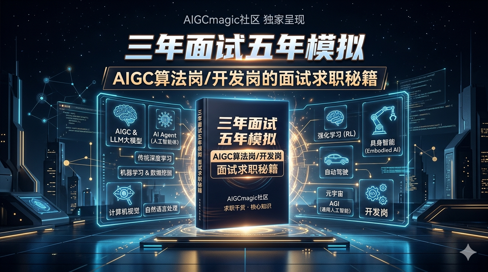
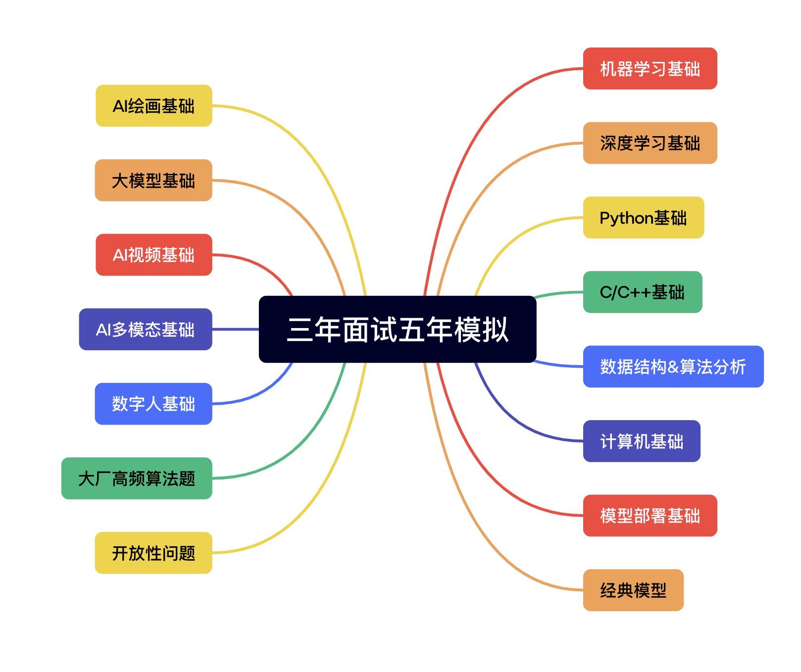

解决什么问题
帮助用户从“知道要学什么”走向“知道为什么学、如何学、如何在面试中讲清楚”，降低 AI 求职准备的碎片化与信息噪声。
AIGCmagic Community / AI Career Knowledge System
AIGC算法岗 / 开发岗的面试求职秘籍
这是一个面向 AI 求职、面试、笔试与成长进阶的系统化内容平台，依托 AIGCmagic 社区 持续沉淀一线行业经验、岗位知识地图与高频面试方法论，服务校招生、社招工程师、算法工程师、大模型应用开发者、AI 研究员与转行学习者。
静态站点无法代替用户完成 GitHub 授权操作，这里嵌入的是可直接跳转 / 触发 Star 的 GitHub 按钮。


Project Positioning
项目以内容深度、岗位针对性与持续共建为核心，不只是零散题库或经验贴，而是把 AIGC 时代算法岗与开发岗所需的知识、方法、经验与社区资源连接成完整体系。
帮助用户从“知道要学什么”走向“知道为什么学、如何学、如何在面试中讲清楚”，降低 AI 求职准备的碎片化与信息噪声。
面向校招生、社招工程师、算法工程师、大模型应用开发者、AI 研究员，以及希望转向 AI 领域的学习者与从业者。
以系统化、实战化、长期迭代为主线，覆盖知识体系梳理、岗位认知、面经总结、薪资与内推资讯、简历与职业规划。
源自 AIGCmagic 社区，多位一线专家联合编写与维护，强调开源共建、经验共享与行业长期陪伴。
Knowledge Map
从基础理论到前沿方向，从算法理解到工程落地，从经典问题到 AIGC 时代新能力，构建一张既有知识广度、又有岗位针对性的内容地图。
简历模版、求职攻略、面经整理、薪资与内推信息、高频答疑。
InterviewCareer基础知识、架构、训练微调、RAG、推理应用、安全性与评测。
LLMRAG智能体工作流、规划模式、框架理解与 Agent 化应用能力。
AgentWorkflow模态编码器、输入输出映射器、核心模型范式与前沿方向。
MultimodalVL视频生成、编辑、理解、训练优化与统一视频大模型趋势。
VideoGeneration扩散模型、LoRA、ControlNet、Flux、Stable Diffusion 与实操。
DiffusionImage核心概念、网络结构、训练优化、注意力机制与工程实践。
DLTraining目标检测、分割、OCR、ReID、跟踪、自然语言处理与强化学习。
CVNLPRL经典算法、损失函数、模型评估与优化方法，高频基础完整覆盖。
MLEvalvLLM、SGLang、调度优化、服务化部署与工业级推理系统认知。
DeployServingPython、C/C++、数据结构、算法题、计算机基础，夯实工程底座。
PythonC++CS自动驾驶、具身智能、元宇宙、AGI 等方向的岗位关联能力外延。
Embodied AIAGIInterview Value
网站不是简单地“告诉你有哪些题”，而是帮助你建立岗位认知、知识表达与真实竞争力，把准备工作做成可复用的长期资产。
把 AIGC、LLM、Agent、CV、NLP、部署、编程基础串成结构化知识体系，便于搭建完整认知框架。
既覆盖模型原理、训练与评估，也覆盖工程实现、部署落地与研发链路中的高频问题。
不仅有经典问答与基础概念，也有真实项目经验、岗位理解、部署实践和前沿技术判断。
聚焦 AIGC、RAG、智能体、多模态、视频生成与工业级推理系统等新型面试能力要求。
帮助用户把“会做”转化成“会讲”，更好地组织简历、项目介绍、技术方案与面试回答。
项目持续更新，既适用于求职冲刺，也适合工作后复盘、带教、知识内化与方向切换。
Contributors
作者区延续 README 的专业背书信息，强调这是由长期从事 AIGC、CV、部署与大模型应用的人共同维护的项目，而非单点经验输出。
Community & Open Collaboration
《三年面试五年模拟》源自 AIGCmagic 社区，不止服务一次求职冲刺，更希望成为 AI 从业者持续学习、交流、共建与职业成长的长期入口。